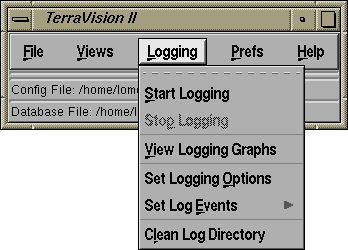
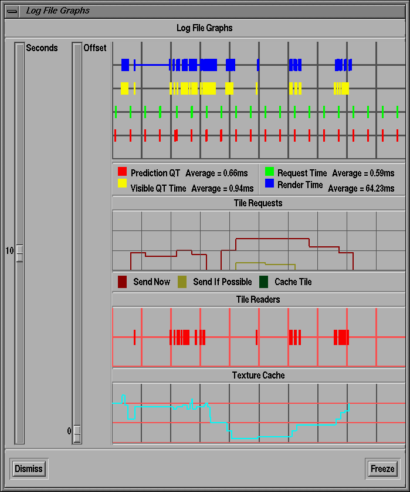
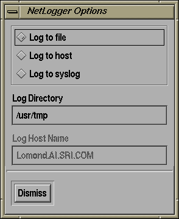

The logging facilities of TerraVision are useful for tracing the state of the application and the network over which the terrain data are being fetched. We use the NetLogger tools from LBNL to implement our logging facility. For further information about NetLogger, please refer to the NetLogger Home Page.

|
This window lets you specify where the log data are set to. NetLogger allows you to send log events to one of: a file on local disk, a port on a host, or to the syslog. The default option is to send log events to a log file on local disk. In this case, you can specify the directory to which the log files are written via the Log Directory text field (this defaults to "/usr/tmp"). When logging to local disk, TerraVision will create a single log file for each of the OI and DEM datasets that are being browsed. In addition, separate log files are created for the DPSS activities of each of these datasets, if these reside on a DPSS. The log files following the naming convention: "tvlog-<datasetname>[.dpss]", e.g. tvlog-yosemite.oi or tvlog-yosemite.oi.dpss. |

|
When you select Log To File from the Set Logging Output menu option, all log files will be written to the specified directory on local disk. These files are not removed automatically as it is possible that the user may wish to visualize these after the current TerraVision session. You can therefore use this menu option to explicitly delete all TerraVision log files (tvlog-*) that exist in the currently specified Log Directory.